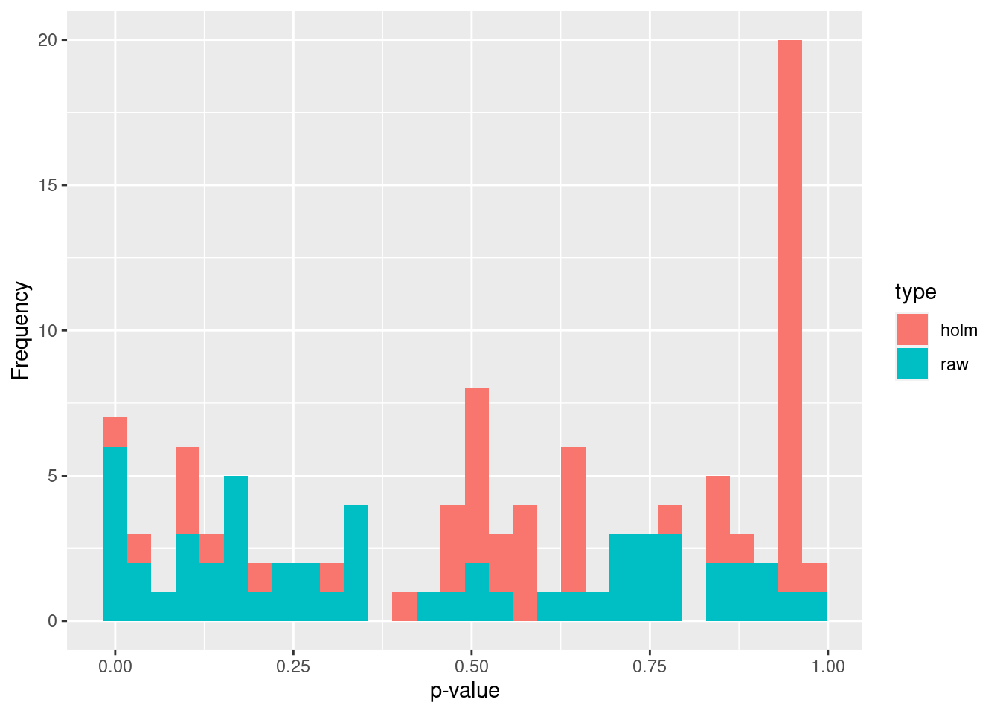

10 Differential abundance analysis
Here, we analyse abundances with three different methods: Wilcoxon test, DESeq2, and ANCOM-BC. All of these test statistical differences between groups. We analyse Genus level abundances.
10.1 Wilcoxon test
A Wilcoxon test estimates difference between two groups. It is a non-parametric alternative to a t-test, which means that the Wilcoxon test does not require normally distributed data.
Let’s first collect the data for the testing purpose.
# Agglomerates data to Genus level
tse_genus <- agglomerateByRank(tse, rank = "Genus")
# Does clr transformation. Pseudocount is added, because data contains zeros, and
# clr transformation includes log transformation.
tse_genus <- transformCounts(tse_genus, method = "clr", pseudocount = 1)
# Does transpose, so samples are in rows, then creates a data frame.
abundance_analysis_data <- data.frame(t(assay(tse_genus, "clr")))
# Then we need variable for grouping samples. "patient_status" column includes information
# about patients' status. There two groups "ADHD" and "control". Let's include that to the data frame.
abundance_analysis_data <- cbind(abundance_analysis_data, patient_status = colData(tse_genus)$patient_status)Now we can do the Wilcoxon test. We test all the taxa by looping through columns, and store individual p-values to a vector. Then we create a data frame from collected data.
Code below does the Wilcoxon test only for columns that contain abundances, not for column that contain patient status.
colnames <- names(abundance_analysis_data[, !names(abundance_analysis_data) %in% "patient_status"])
wilcoxon_p <- c() # Initialize empty vector for p-values
# Do for loop over selected column names
for (i in colnames) {
result <- wilcox.test(abundance_analysis_data[, i] ~ patient_status,
data = abundance_analysis_data)
# Stores p-value to the vector with this column name
wilcoxon_p[[i]] <- result$p.value
}
wilcoxon_p <- data.frame(taxa = names(wilcoxon_p),
p_raw = unlist(wilcoxon_p))Multiple tests were performed. These are not independent, so we need to adjust p-values for multiple testing. Otherwise, we would increase the chance of a type I error drastically depending on our p-value threshold. By applying a p-value adjustment, we can keep the false positive rate at a level that is acceptable. What is acceptable depends on our research goals. Here we use the fdr method, but there are several other methods as well.
wilcoxon_p$p_adjusted <- p.adjust(wilcoxon_p$p_raw, method = "fdr")df <- data.frame(x = c(wilcoxon_p$p_raw, wilcoxon_p$p_adjusted),
type=rep(c("raw", "holm"),
c(length(wilcoxon_p$p_raw),
length(wilcoxon_p$p_adjusted))))
wilcoxon_plot <- ggplot(df) +
geom_histogram(aes(x=x, fill=type)) +
labs(x = "p-value", y = "Frequency")
wilcoxon_plot## `stat_bin()` using `bins = 30`. Pick better value with `binwidth`.
10.2 DESeq2
Our second analysis method is DESeq2. This performs the data normalization automatically. It also takes care of the p-value adjustment, so we don’t have to worry about that.
DESeq2 uses negative binomial distribution to detect differences in read counts between groups. Its normalization takes care of the differences between library sizes and compositions. DESeq2 analysis includes multiple steps, but they are done automatically. More information can be found, e.g., from Harvard Chan Bioinformatic Core’s tutorial Introduction to DGE - ARCHIVED
Now let us show how to do this. First, run the DESeq2 analysis.
# Creates DESeq2 object from the data. Uses "patient_status" to create groups.
ds2 <- DESeqDataSet(tse_genus, ~patient_status)## converting counts to integer mode## Warning in DESeqDataSet(tse_genus, ~patient_status): 2 duplicate rownames were renamed by adding numbers## Warning in DESeqDataSet(tse_genus, ~patient_status): some variables in design formula are characters, converting to factors# Does the analysis
dds <- DESeq(ds2)## estimating size factors## estimating dispersions## gene-wise dispersion estimates## mean-dispersion relationship## final dispersion estimates## fitting model and testing## -- replacing outliers and refitting for 11 genes
## -- DESeq argument 'minReplicatesForReplace' = 7
## -- original counts are preserved in counts(dds)## estimating dispersions## fitting model and testing# Gets the results from the object
res <- results(dds)
# Creates a data frame from results
df <- as.data.frame(res)
# Adds taxon column that includes names of taxa
df$taxon <- rownames(df)
# Orders the rows of data frame in increasing order firstly based on column "log2FoldChange"
# and secondly based on "padj" column
df <- df %>% arrange(log2FoldChange, padj)
knitr::kable(head(df))| baseMean | log2FoldChange | lfcSE | stat | pvalue | padj | taxon | |
|---|---|---|---|---|---|---|---|
| Genus:Ruminococcaceae_UCG-014 | 22.548297 | -24.891268 | 2.460684 | -10.115589 | 0.0000000 | 0.0000000 | Genus:Ruminococcaceae_UCG-014 |
| Order:Bacteroidales | 40.353733 | -9.241798 | 2.136205 | -4.326270 | 0.0000152 | 0.0002730 | Order:Bacteroidales |
| Genus:Faecalibacterium | 231.079502 | -7.074433 | 1.745612 | -4.052694 | 0.0000506 | 0.0006835 | Genus:Faecalibacterium |
| Genus:Catabacter | 18.045614 | -6.615454 | 1.716150 | -3.854823 | 0.0001158 | 0.0012508 | Genus:Catabacter |
| Genus:Butyricicoccus | 2.392885 | -5.179608 | 2.948055 | -1.756957 | 0.0789251 | 0.3278426 | Genus:Butyricicoccus |
| Order:Gastranaerophilales | 2.067972 | -3.054975 | 2.938641 | -1.039588 | 0.2985315 | 0.7269742 | Order:Gastranaerophilales |
10.3 ANCOM-BC
The analysis of composition of microbiomes with bias correction (ANCOM-BC) is a recently developed method for differential abundance testing. It is based on an earlier published approach. This method could be recommended as part of several approaches: A recent study compared several mainstream methods and found that among another method, ANCOM-BC produced the most consistent results and is probably a conservative approach. Please note that based on this and other comparisons, no single method can be recommended across all datasets. Rather, it could be recommended to apply several methods and look at the overlap/differences.
As the only method, ANCOM-BC incorporates the so called sampling fraction into the model. The latter term could be empirically estimated by the ratio of the library size to the microbial load. Variations in this sampling fraction would bias differential abundance analyses if ignored. Furthermore, this method provides p-values, and confidence intervals for each taxon. It also controls the FDR and it is computationally simple to implement.
As we will see below, to obtain results, all that is needed is to pass
a phyloseq object to the ancombc() function. Therefore, below we first convert
our tse object to a phyloseq object. Then, we specify the formula. In this formula,
other covariates could potentially be included to adjust for confounding.
Please check the function documentation
to learn about the additional arguments that we specify below.
# currently, ancombc requires the phyloseq format, but we can easily convert:
pseq <- makePhyloseqFromTreeSummarizedExperiment(tse)
pseq_genus <- phyloseq::tax_glom(pseq, taxrank = "Genus")
out = ancombc(
phyloseq = pseq_genus,
formula = "patient_status",
p_adj_method = "holm",
zero_cut = 0.90,
lib_cut = 0,
group = "patient_status",
struc_zero = TRUE,
neg_lb = TRUE,
tol = 1e-5,
max_iter = 100,
conserve = TRUE,
alpha = 0.05,
global = TRUE
)
res <- out$resThe object out contains all relevant information. Again, see the
documentation of the function
under Value for an explanation of all the output objects. Our question can be answered
by looking at the res object, which now contains dataframes with the coefficients,
standard errors, p-values and q-values. Conveniently, there is a dataframe diff_abn.
Here, we can find all differentiallt abundant taxa. Below we show the first 6 entries of this dataframe:
knitr::kable(head(res$diff_abn))| patient_statusControl | |
|---|---|
| 172647198 | FALSE |
| 1726478 | FALSE |
| 172647201 | FALSE |
| 17264798 | FALSE |
| 172647195 | FALSE |
| 1726472 | FALSE |
In total, this method detects 13 differentially abundant taxa.
10.4 Comparison of Wilcoxon test and DESeq2
Let’s compare results that we got from the Wilcoxon test and DESeq2. As we can see from the scatter plot, DESeq2 gives lower p-values than Wilcoxon test.
mf <- data.frame(df$padj, wilcoxon_p$p_adjusted)
p <- ggplot(mf, aes(x = df$padj, y = wilcoxon_p$p_adjusted)) +
labs(x = "DESeq2 adjusted p-value", y = "Wilcoxon test adjusted p-value") +
geom_count() +
scale_size_area(max_size = 10)
print(p)
Prints number of p-values under 0.05
print(paste0("DESeq2 p-values under 0.05: ", sum(df$padj<0.05, na.rm = TRUE), "/", length(df$padj)))## [1] "DESeq2 p-values under 0.05: 7/54"print(paste0("Wilcoxon test p-values under 0.05: ", sum(wilcoxon_p$p_adjusted<0.05, na.rm = TRUE), "/", length(wilcoxon_p$p_adjusted)))## [1] "Wilcoxon test p-values under 0.05: 2/54"10.5 Comparison of abundance
In previous steps, we got information which taxa vary between ADHD and control groups. Let’s plot those taxa in the boxplot, and compare visually if abundances of those taxa differ in ADHD and control samples. For comparison, let’s plot also taxa that do not differ between ADHD and control groups.
Let’s first gather data about taxa that have highest p-values.
# There are some taxa that do not include Genus level information. They are
# excluded from analysis.
# str_detect finds if the pattern is present in values of "taxon" column.
# Subset is taken, only those rows are included that do not include the pattern.
df <- df[ !stringr::str_detect(df$taxon, "Genus:uncultured"), ]
# Sorts p-values in decreasing order. Takes 3rd first ones. Takes those rows that match
# with p-values. Takes taxa.
highest3 <- df[df$padj %in% sort(df$padj, decreasing = TRUE)[1:3], ]$taxon
# From clr transformed table, takes only those taxa that had highest p-values
highest3 <- assay(tse_genus, "clr")[highest3, ]
# Transposes the table
highest3 <- t(highest3)
# Adds colData that includes patient status infomation
highest3 <- data.frame(highest3, as.data.frame(colData(tse_genus)))
# Some taxa names are that long that they don't fit nicely into title. So let's add there
# a line break after e.g. "Genus". Here the dot after e.g. Genus is replaced with
# ": \n"
colnames(highest3)[1:3] <- lapply(colnames(highest3)[1:3], function(x){
# Replaces the first dot
temp <- stringr::str_replace(x, "[.]", ": ")
# Replace all other dots and underscores with space
temp <- stringr::str_replace_all(temp, c("[.]" = " ", "_" = " "))
# Adds line break so that 25 characters is the maximal width
temp <- stringr::str_wrap(temp, width = 25)
})Next, let’s do the same but for taxa with lowest p-values.
# Sorts p-values in increasing order. Takes 3rd first ones. Takes those rows that match
# with p-values. Takes taxa.
lowest3 <- df[df$padj %in% sort(df$padj, decreasing = FALSE)[1:3], ]$taxon
# From clr transformed table, takes only those taxa that had lowest p-values
lowest3 <-assay(tse_genus, "clr")[lowest3, ]
# Transposes the table
lowest3 <- t(lowest3)
# Adds colData that includes patient status infomation
lowest3 <- data.frame(lowest3, as.data.frame(colData(tse_genus)))
# Some taxa names are that long that they don't fit nicely into title. So let's add there
# a line break after e.g. "Genus". Here the dot after e.g. Genus is replaced with
# ": \n"
colnames(lowest3)[1:3] <- lapply(colnames(lowest3)[1:3], function(x){
# Replaces the first dot
temp <- stringr::str_replace(x, "[.]", ": ")
# Replace all other dots and underscores with space
temp <- stringr::str_replace_all(temp, c("[.]" = " ", "_" = " "))
# Adds line break so that 25 characters is the maximal width
temp <- stringr::str_wrap(temp, width = 25)
})Then we can plot these six different taxa. Let’s arrange them into the same picture.
# Puts plots in the same picture
gridExtra::grid.arrange(
# Plot 1
ggplot(highest3, aes(x = patient_status, y = highest3[,1])) +
geom_boxplot() +
ylab("CLR abundances") + # y axis title
ggtitle(names(highest3)[1]) + # main title
theme(title = element_text(size = 7),
axis.text = element_text(size = 7),
axis.title.x=element_blank()), # makes titles smaller, removes x axis title
# Plot 2
ggplot(highest3, aes(x = patient_status, y = highest3[,2])) +
geom_boxplot() +
ylab("CLR abundances") + # y axis title
ggtitle(names(highest3)[2]) + # main title
theme(title = element_text(size = 7),
axis.text = element_text(size = 7),
axis.title.x=element_blank()), # makes titles smaller, removes x axis title
# Plot 3
ggplot(highest3, aes(x = patient_status, y = highest3[,3])) +
geom_boxplot() +
ylab("CLR abundances") + # y axis title
ggtitle(names(highest3)[3]) + # main title
theme(title = element_text(size = 7),
axis.text = element_text(size = 7),
axis.title.x=element_blank()), # makes titles smaller, removes x axis title
# Plot 4
ggplot(lowest3, aes(x = patient_status, y = lowest3[,1])) +
geom_boxplot() +
ylab("CLR abundances") + # y axis title
ggtitle(names(lowest3)[1]) + # main title
theme(title = element_text(size = 7),
axis.text = element_text(size = 7),
axis.title.x=element_blank()), # makes titles smaller, removes x axis title
# Plot 5
ggplot(lowest3, aes(x = patient_status, y = lowest3[,2])) +
geom_boxplot() +
ylab("CLR abundances") + # y axis title
ggtitle(names(lowest3)[2]) + # main title
theme(title = element_text(size = 7),
axis.text = element_text(size = 7),
axis.title.x=element_blank()), # makes titles smaller, removes x axis title
# Plot 6
ggplot(lowest3, aes(x = patient_status, y = lowest3[,3])) +
geom_boxplot() +
ylab("CLR abundances") + # y axis title
ggtitle(names(lowest3)[3]) + # main title
theme(title = element_text(size = 7),
axis.text = element_text(size = 7),
axis.title.x=element_blank()), # makes titles smaller, removes x axis title
# 3 columns and 2 rows
ncol = 3,
nrow = 2
)